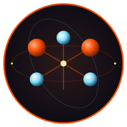

Watt
The Lean Desktop Project
The Lean Desktop Project
The premise is simple: idle should mean idle. Every wakeup, every poll, every fork on a timer is a watt the battery doesn't give back. Two sister suites grew out of pulling on that thread — CHasm in pure x86_64 assembly that paints the pixels and reads the keys, and Fe2O3 in Rust on a shared TUI foundation that does mail, files, calendars, charts, and the rest. Together they form a complete Linux desktop that costs under three watts to sit still with the screen on, about a day on a single charge. Pick a door.

x86_64 asm · the bedrock
Display server, shell, terminal emulator, tiling window manager, status bar, file viewer, font rasterizer, screen locker. A complete X session in under 1 MB of executable code. No libc, no toolkit, no dynamic linking, no runtime.
Enter →
rust on crust · the application layer
Modal editor, file manager, web browser, messaging hub, calendar, astronomy, movies, music, color picker, battery triage. Single static binaries on one shared TUI library. Microsecond startup, async I/O, cold when idle.
Enter →